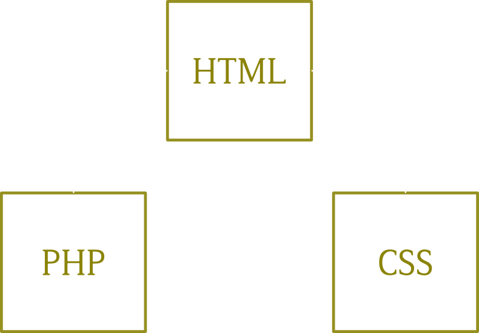
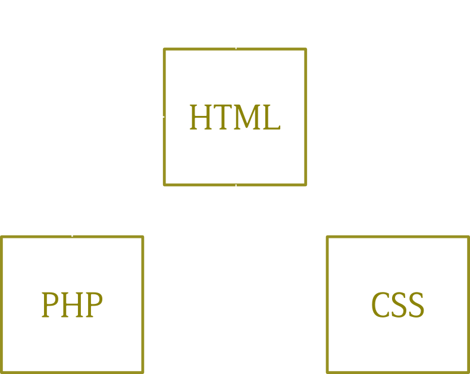

Les moteurs de Template
Terrain d'entente entre intégrateurs et développeurs
- bertrandkeller -
Un bref survol
Les systèmes de template ont pour objectif de permettre à une équipe de développement de séparer la présentation de la logique applicative et du contenu.
Les moteurs les plus connus
PHP
<?php if(!empty($foo)): ?>
<?php foreach($foo as $bar): ?>
<li><a href="<?=$bar['zig']?>"><?=$bar['zag']?></a></li>
<li><a href="<?=$bar['zig2']?>"><?=$bar['zag2']?></a></li>
<li><a href="<?=$bar['zig3']?>"><?=$bar['zag3']?></a></li>
<?php endforeach; ?>
<?php else: ?>
There were no rows found.
<?php endif; ?>
WordPress - Drupal
Smarty
<ul>
{foreach from=$myArray item=foo}
<li>{$foo}</li>
{foreachelse}
<li>No item found</li>
{/foreach}
</ul>
WordPress - Drupal
Fluid (Typo3)
<f:if condition="{shoppinglist}">
<ul>
<f:then>
<f:for each="{shoppinglist}" as="food" key="number">
<li>{number}: {food}</li>
</f:for>
</f:then>
<f:else>
<li>No item found</li>
</f:else>
</ul>
</f:if>
TYPO3
Twig (Symfony)
<ul>
{% for user in users %}
<li>{{ user.username|e }}</li>
{% else %}
<li><em>no user found</em></li>
{% endfor %}
</ul>
Symfony
Handelbars
<ul class="people_list">
{{#each people}}
<li>{{this}}</li>
{{/each}}
</ul>
Les avantages et les inconvénients
Avantages
Meilleure visibilité dans le code
Economie de ressources des serveurs grâce à la mise en cache
Logique applicative séparée de la présentation
Inconvénients
Chargement de votre page retardé
Langage de template à apprendre
Lecture des erreurs compliquée
Pourquoi utiliser un moteur de template ?
Périmètre classique
Périmètre partagé
Développement hiérarchisé

Structure first

Questions ?
Merci !
Twitter : @bertrandkeller
Blog : http://www.bertrandkeller.info